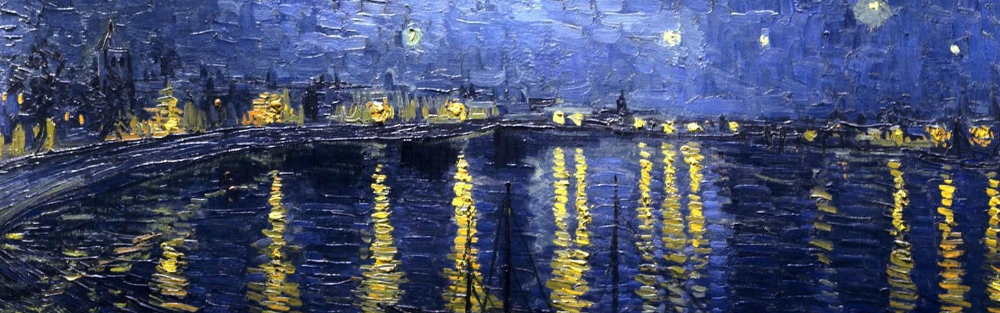

UNE ŒUVRE · UN PRIX
LE JEU ✦
Testez vos connaissances du marché de l'art ! Une œuvre vous sera
présentée avec son auteur et sa date de production, et vous devrez estimer son prix de vente.
Le but est de se rapprocher le plus possible du prix réel.
EN APPRENDRE PLUS ✦
L'estimation du prix d'une œuvre d'art est un exercice complexe qui dépend de nombreux facteurs : la renommée de l'artiste, la période de création, la taille de l'œuvre, sa rareté, son état de conservation, et bien d'autres critères. Pour approfondir vos connaissances, consultez notre page pour en apprendre plus.
En apprendre plusNOUS CONTACTER ✦
Vous avez des questions ? Des suggestions ? N'hésitez pas à nous contacter !
Nous contacter